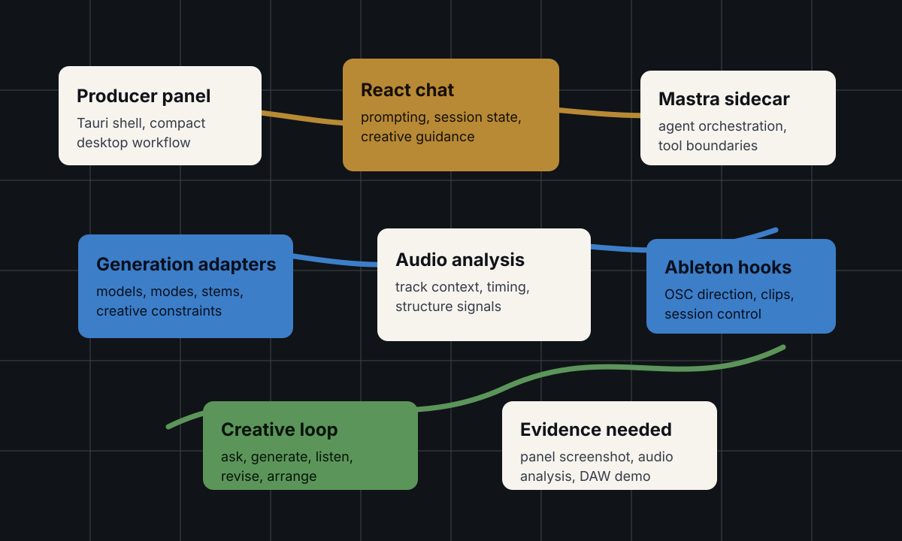
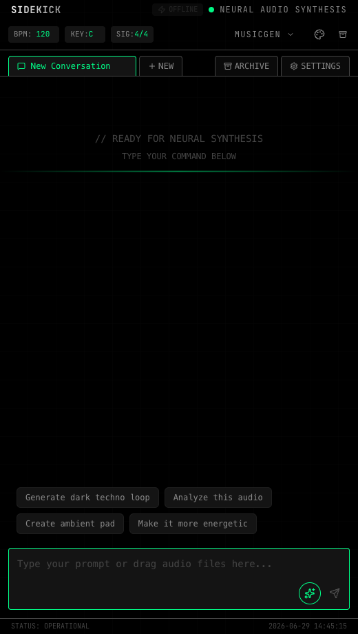
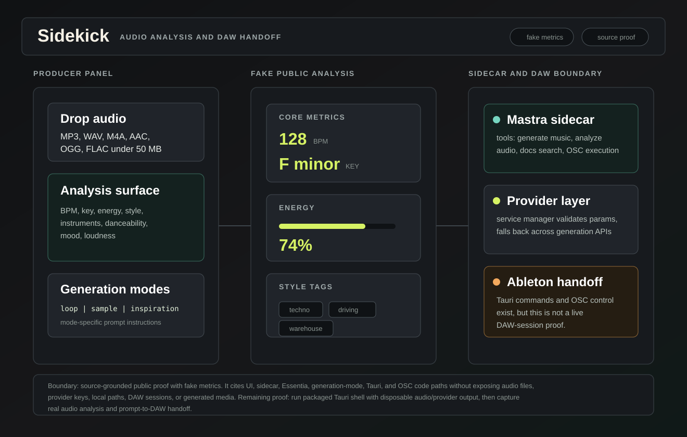
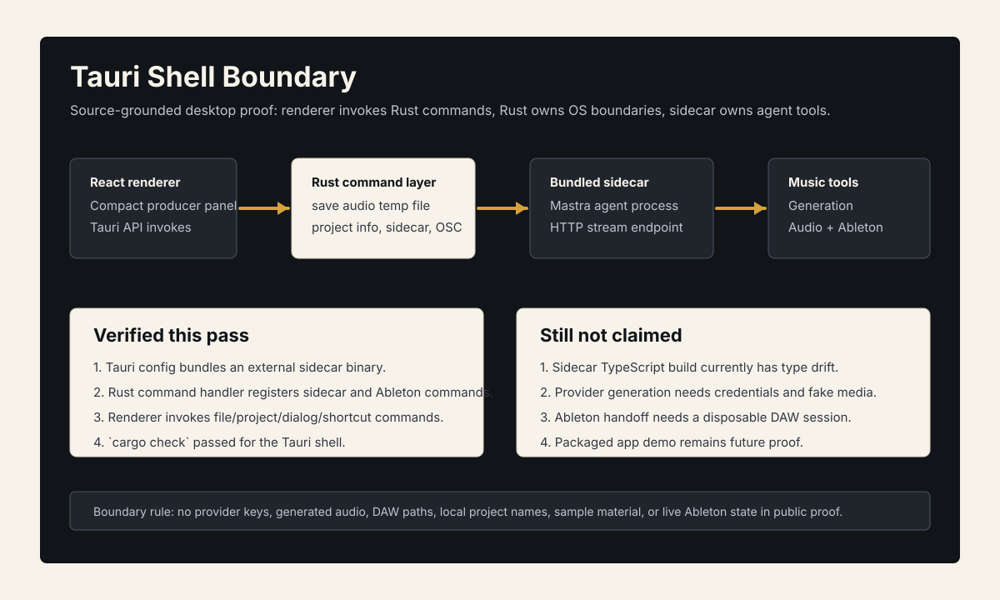

Problem
Music producers do not need another generic chatbot. They need assistance that understands the shape of production work: prompts, generation modes, audio context, arrangement decisions, and the way a desktop tool needs to sit beside a DAW without taking over the session.
What I Built
Sidekick is documented as a creative AI desktop product for producers: a Tauri panel with a React chat surface, Mastra sidecar, generation adapters, audio-analysis direction, Ableton OSC hooks, and portfolio-facing README. It is public under `gorkamolero` and acts as a bridge between technical AI systems, creative taste, and music-domain tooling.
- Desktop productTauri panel and React chat designed for a compact producer workflow.
- AI systemMastra sidecar, generation adapters, modes, and creative tool boundaries.
- Domain bridgeAudio-analysis direction and Ableton hooks connect AI output to production work.
System Architecture




cargo check; the sidecar/provider/DAW runtime remains explicitly outside the claim until cleaned up and captured with disposable media.Technical Decisions
- Frame the product around producer workflow instead of a generic assistant surface.
- Use a desktop shell so the tool can live beside creative software.
- Separate chat/product UI from agent/tool orchestration through the sidecar shape.
- Keep music-domain hooks visible so the AI work points toward real production, not only text generation.
What This Proves
Sidekick shows creative AI product judgment: turning domain taste into software shape, working across desktop UI and agent tooling, and designing for a workflow where feel and timing matter as much as raw model output.
Public Evidence
- Public repo:
gorkamolero/sidekick. - Root README added and pushed.
- Portfolio framing exists in the README upgrade log and bullet bank.
- Renderer build passed locally.
- Tauri/Rust shell
cargo checkpassed locally. - Compact panel screenshot captured in
portfolio/assets/sidekick-panel.png. - Source-grounded audio-analysis and DAW-boundary proof added with fake metrics.
- Source-grounded Tauri shell and sidecar-boundary proof added.
- Proof transcript — available on request.
Review Boundary
Check generated audio, local project names, DAW session paths, model/provider config, and any sample material before publishing deeper demos.